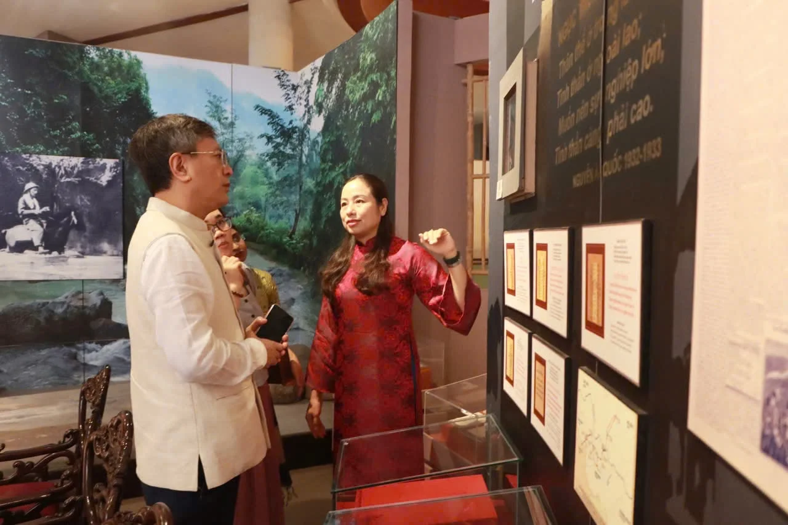
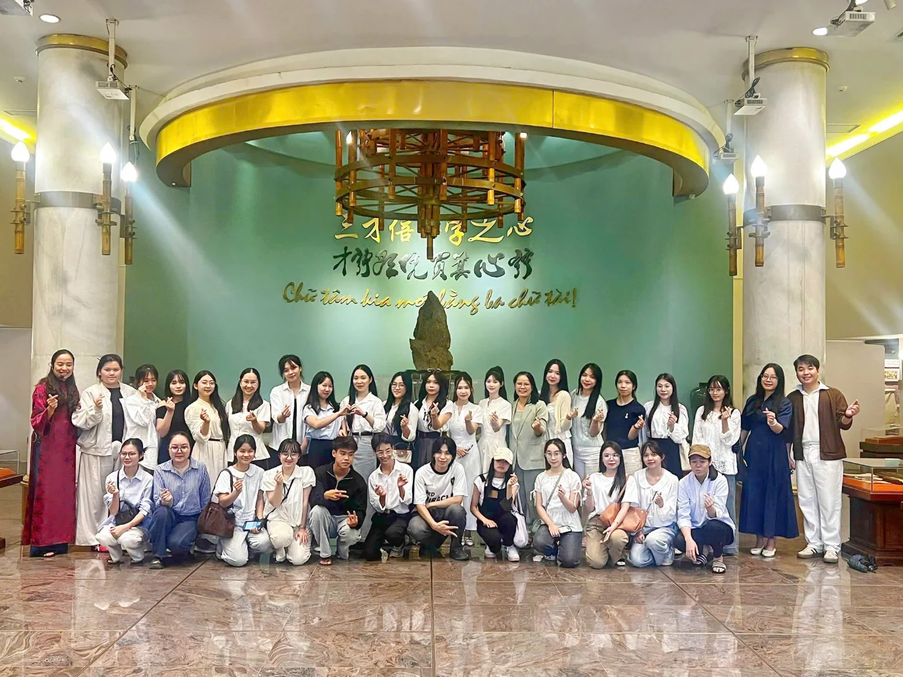
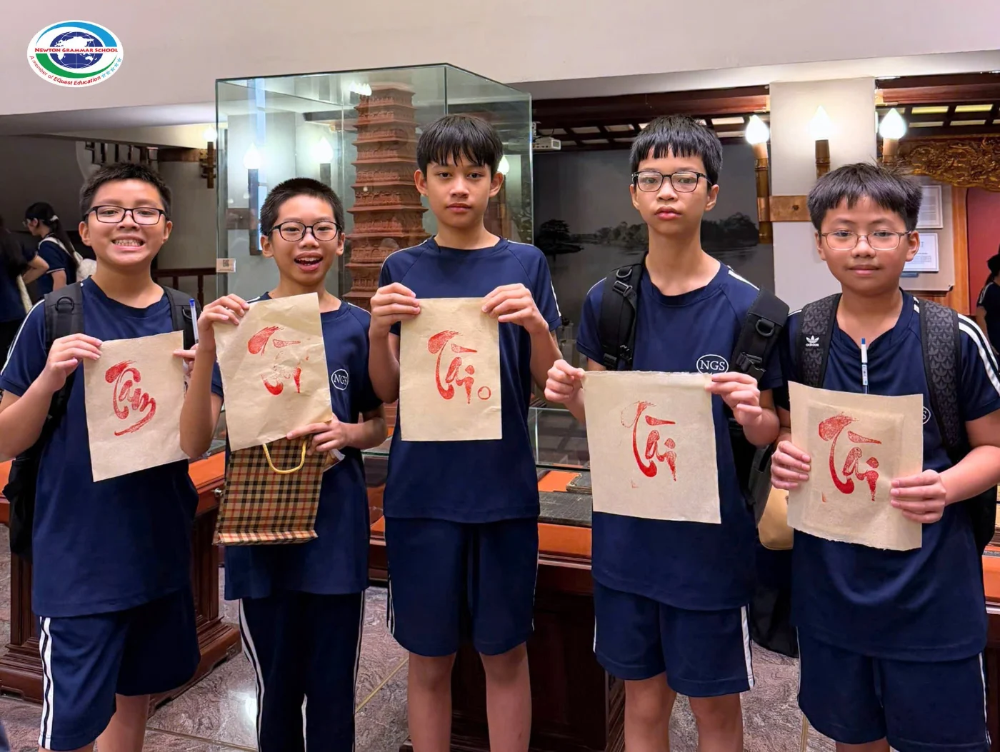

Sinh viên ngành Văn học, trường Đại học Khoa học Xã hội và Nhân văn tham quan Bảo tàng Văn học Việt NamĐọc bài viết
Ngài Tshering W.Sherpa, Đại sứ đặc mệnh toàn quyền Cộng hòa Ấn Độ tại Việt Nam thăm Bảo tàng Văn học Việt NamĐọc bài viết
Sinh viên ngành Văn học – Trường Đại học Khoa học, Đại học Thái Nguyên tham quan Bảo Tàng Văn Học Việt NamĐọc bài viết
Học sinh khối 7 Trường Liên cấp Newton tham quan, học tập và trải nghiệm tại Bảo tàng Văn học Việt NamĐọc bài viết